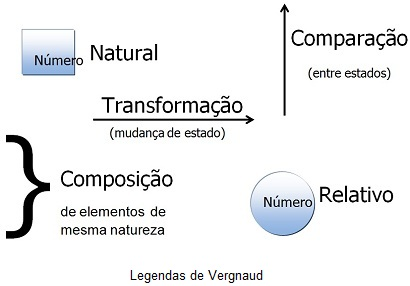
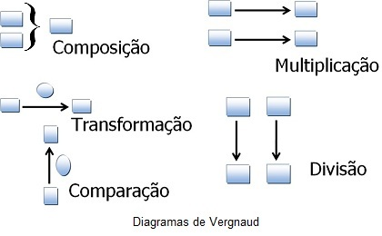

Para resolução de cada situação-problema referente a uma determinada categoria, Gérard Vergnaud propõe a utilização de um diagrama específico para a respectiva modelagem. Os diagramas são formados por um conjunto de símbolos e formas geométricas.

De acordo com as legendas, o número natural é representado por um quadrado e o número relativo por um círculo. As classes de estruturas aditivas, Composição, Transformação e Comparação de medidas, são representadas, respectivamente, pelos símbolos abre chave, seta para direita e seta para cima.
A junção das legendas é formada para construir os diagramas de forma a modelar e solucionar situações-problemas relacionadas a uma determinada categoria.
